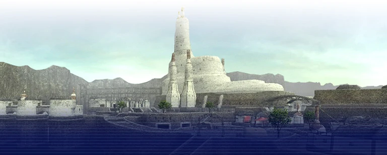

The Republic of Bastok
20 missions · Complete 9-2 to reach Rank 10.
These are original national story missions, not Zenith Moogle side quests. Accept them from your nation’s mission guards and follow the named story NPCs. Report to the named mission NPC to complete each stage.
Your current nation, completed story steps and Rank Points control availability. If the next mission is missing, speak to a mission guard and raise Rank Points with crystals at a Conquest guard when required. Optional repeatable missions are included in the numbered order; you do not necessarily need every one to advance.
Rank 1
| Mission | Title | Reward |
|---|---|---|
| 1-1 | The Zeruhn Report | Rank Points |
| 1-2 | A Geological Survey | Rank Points |
| 1-3 | Fetichism | Rank 2; 1,000 gil |
Rank 2
| Mission | Title | Reward |
|---|---|---|
| 2-1 | The Crystal Line | Rank Points |
| 2-2 | Wading Beasts | Rank Points |
| 2-3 | The Emissary | Rank 3; 3,000 gil |
Rank 3
| Mission | Title | Reward |
|---|---|---|
| 3-1 | The Four Musketeers | Rank Points |
| 3-2 | To the Forsaken Mines | Rank Points |
| 3-3 | Jeuno | Rank 4; 5,000 gil |
Rank 4
| Mission | Title | Reward |
|---|---|---|
| 4-1 | Magicite | Rank 5; 10,000 gil; Airship Pass |
Rank 5
| Mission | Title | Reward |
|---|---|---|
| 5-1 | Darkness Rising | Rank Points |
| 5-2 | Xarcabard, Land of Truths | Rank 6; 20,000 gil |
Rank 6
| Mission | Title | Reward |
|---|---|---|
| 6-1 | Return of the Talekeeper | Rank Points |
| 6-2 | The Pirates' Cove | Rank 7; 40,000 gil |
Rank 7
| Mission | Title | Reward |
|---|---|---|
| 7-1 | The Final Image | Rank Points |
| 7-2 | On My Way | Rank 8; 60,000 gil |
Rank 8
| Mission | Title | Reward |
|---|---|---|
| 8-1 | The Chains That Bind Us | Rank Points |
| 8-2 | Enter the Talekeeper | Rank 9; 80,000 gil |
Rank 9
| Mission | Title | Reward |
|---|---|---|
| 9-1 | The Salt of the Earth | Rank Points |
| 9-2 | Where Two Paths Converge | Rank 10; 100,000 gil; national flag |